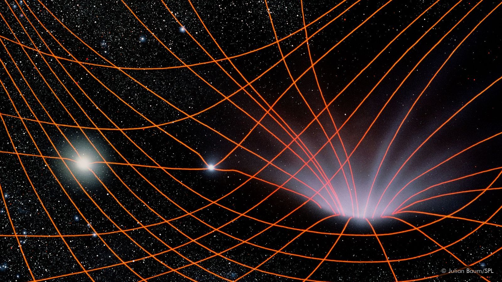

On this page you will find the slides used in the previous semesters:
Week 1 - Introduction and Housekeeping
Week 2 - Download slides
Week 3 - Download slides
Week 4 - Download slides
Week 5 - Download slides
Week 6 - Download slides
Week 7 - Download slides
Week 8 - Download slides
Week 9 - Download slides
Week 10 - Download slides
Week 11 - Download slides
Week 12 - Download slides
2020 Kai Du. This site is built with Pandoc and GitHub Pages.